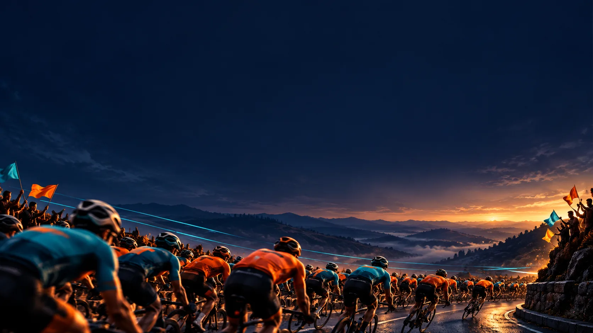

TAHERI
UNITY RIDE
What this briefing covers
01
Route Overview
The start at Taheri Masjid, four checkpoints and the return for closing.
02
Activities
Garbage collection at Frere Hall and the treasure hunt at YMCA Ground.
03
Taheri Web Application
Registration, QR cards, checkpoint scans, results and the event dashboard.
04
Communication Application
Zello push-to-talk for teams across the event.
The main checkpoints

Taheri Masjid

Frere Hall

Jinnah House

Al Nadi Al Burhani

YMCA Ground
Noman Centre
Registration & kits
Three registration and giveaway desks.
Registration: 4 scouts. Kits / tags: 4 scouts.
Collect your kit and cycle; join the formation.


Taheri Masjid
Taheri Masjid
Formation & flag-off
Cycle distribution: 5 members.
Formation / arch: 3 members.
Water / emergency car: 2 members each.

Taheri Masjid to Frere Hall

Frere Hall
Frere Hall
Arrival & activity
Entry / exit: 1 member per gate.
Scan: 2 scouts. Parking: 2 members.
Cleaning: 2 scouts + 1 sub-in-charge.

Frere Hall
Visit & refreshments
Library / photo booth: 1 member each.
Refreshments: 1 member (draft).
Follow the exit flag guide.

Frere Hall to Jinnah House
Jinnah House
Jinnah House
Visit checkpoint
Parking: 2 members.
Scan: 2 scouts.
Refreshments: 1 member.

Jinnah House to Al Nadi
Al Nadi Al Burhani
Al Nadi Al Burhani
Gate scanning & entry
Park outside, on the right.
Gate scan: 2 scouts.
Enter the building on foot.

Al Nadi Al Burhani
Outside cycle parking
Use racks beside the boundary wall.
Parking: 3 members + 1 sub-in-charge.
Collect cycles after the visit.

Al Nadi Al Burhani
New building visit
Visit the new white building.
Refreshments inside: 2 members.
Return to the outside parking.

Al Nadi to YMCA Ground
YMCA Ground
YMCA Ground
Entry from the right
Enter from the right.
Gate: 2 members. Scan: 2 scouts.
Park cycles inside.

YMCA Ground
Cycle parking inside
Park beside the ground.
Cycle racks: 2 members.
Keep the walkway clear; continue on foot.

YMCA Ground
Activity desks & ground
Start scan: 2 scouts.
End scan: 2 scouts at a separate desk.
Activity ground: 4 members.

YMCA Ground
Refreshments & departure
Counters beside the activity desks.
Refreshments: 2 members.
Collect cycles for the return ride.
YMCA Ground to Taheri Masjid
Taheri Masjid
Arrival through the alley
Exit beneath the ending arch.
Follow the volunteers to cycle return.
Final check-in, then closing.

Taheri Masjid
Cycle return & final scan
Cycle return: 3 members.
Final scan: 2 scouts.
Go upstairs through the small masjid door.

Taheri Masjid
Seating & prize distribution
Seating: upstairs courtyard.
Members distribute prizes.
Return cycles & check in before closing.

02
Activities
Two hands-on activities for riders: garbage collection at Frere Hall and a treasure hunt at YMCA Ground.
Garbage collection
Treasure hunt
Giveaway criteria
Activities overview

Garbage collection
Collect, weigh and record.
Treasure hunt
A maths clue leads to your own badge.
Garbage
collection
A shared effort for a cleaner garden.
Proposed activity visualThe cleaning activity
01
Participant tag scan
Scan the participant’s tag at the activity desk.
02
Cleaning kit
Collect a garbage bag, gloves and a mask.
03
Garden cleanup
Collect garbage for approximately two minutes.
Weighing & completion

04
Return and weigh
Bring the collected garbage to the activity counter for weighing.
05
Closing tag scan
Record the measured weight against the same participant.
06
Giveaway criterion
The highest collected garbage weight ranks first.
Treasure
hunt

Solve the clue.
Find your assigned badge.
The envelope & clue
 QR artwork is illustrative
QR artwork is illustrative
01
Open your envelope
Take the envelope from your bag at the activity desk.
02
Scan the QR inside
The activity start scan records your start time.
03
Solve the maths clue
The answer identifies the numbered search location.
The clue leads to a location
75 × 2 = 150
Find the poster marked 150.

Search point 150
Look near the matching tree or garden marker.
Cyclist badge 7
Cyclist 7 searches for their own badge at that point.
Discovery & verification
04
Find your own badge
Search the marked spot in the garden, beneath the leaves or in the soil.
05
Return for verification
Show the badge that matches your cyclist number.
06
Finish scan and wear
Scan the QR supplied with the badge to finish, then wear your badge.
Giveaway criteria
Highest collected
weight
Measured weight recorded against the participant.
Winner count and weighing rules to be confirmed.Shortest verified
completion time
Activity start scan to verified badge finish scan.
Top 5 / Top 10 to be confirmed.
03
Taheri Web Application
The event’s record-keeping system: participants, QR cards, checkpoint scans, activity results and one dashboard.
Registration
QR cards
Checkpoint scans
Activity results
Dashboard
Software overview
Event records & tracking
Participant registration and QR cards.
Checkpoint scans throughout the ride.
Activity records, results and dashboard.

Participant records
Add each cyclist
Save participant names and registration details.
Assign a participant ID to each record.
Search and manage participant information.

QR card & tag generation
Personalised cyclist card
Generate a card after adding the participant.
Name and tag number link to a unique QR code.
Use the card at each checkpoint.

Checkpoint scanning
Every checkpoint recorded
Start at Taheri Masjid, then Frere Hall.
Then Jinnah House, Al Nadi Al Burhani and YMCA Ground.
Finish at Taheri Masjid; view scan progress.

Activity tracking
Participant activity records
Record each activity’s start and end.
Track who started and who completed.
Store duration against the participant.
Cleaning activity results
Weight-based ranking
Record the collected garbage weight.
Keep start, end and duration in the record.
Rank by highest collected weight.

Treasure hunt results
Completion-time ranking
Track activity start and finish scans.
Record completed clues and elapsed time.
Rank by shortest completion time.

Event dashboard
One view of event progress
View participants, starters and finishers.
Monitor checkpoint scan totals.
Review the leaderboard and finish positions.
04
Communication Application
How event teams stay in touch: Zello push-to-talk on mobile, organised into groups and channels.
Zello
Groups & channels
Push-to-talk
Internet connection
Communication overview
Walkie-talkie on mobile
Use Zello for communication during the event.
Coordinate between event points and internal teams.
Available on Google Play and the Apple App Store.
Groups & channels
Members grouped by duty
Set up channels for the event’s teams.
Add members to their assigned channels.
Use the relevant channel for point-to-point updates.
 Example Zello screen supplied by the organiser
Example Zello screen supplied by the organiser
Push-to-talk communication
Press, speak and release
Open the assigned event channel.
Hold the talk button and speak your update.
Release the button to listen to the team.
Example Zello screen supplied by the organiser
Internet connection
Mobile data stays on
Use an active 3G / 4G data connection.
Zello also works through connected Wi-Fi.
Internet is required for voice communication.
How the pieces fit together
01
Route Overview
Riders follow one route from Taheri Masjid through four checkpoints and back.
02
Activities
Riders take part in the cleaning activity and the treasure hunt.
03
Taheri Web Application
QR cards are scanned at checkpoints and activities; results feed the dashboard.
04
Communication Application
Event points and internal teams coordinate on Zello.